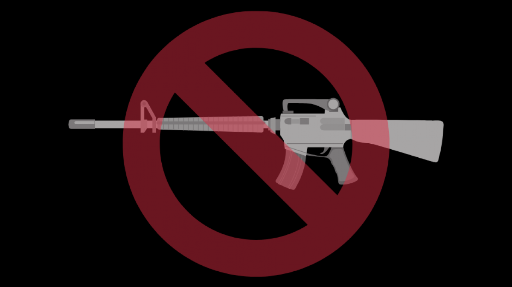
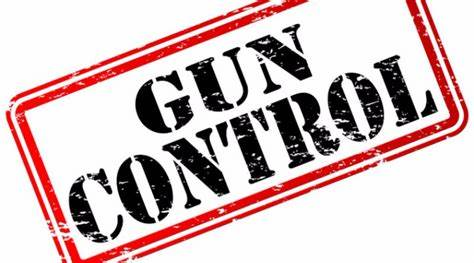
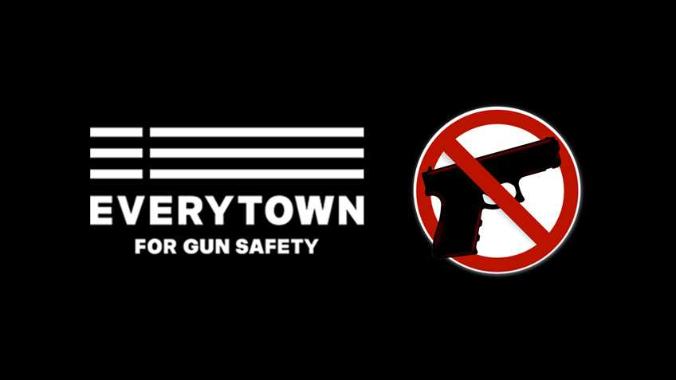
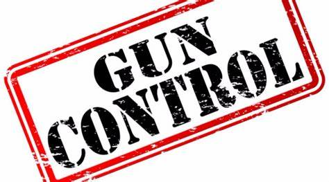
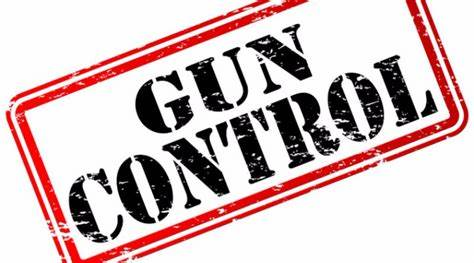
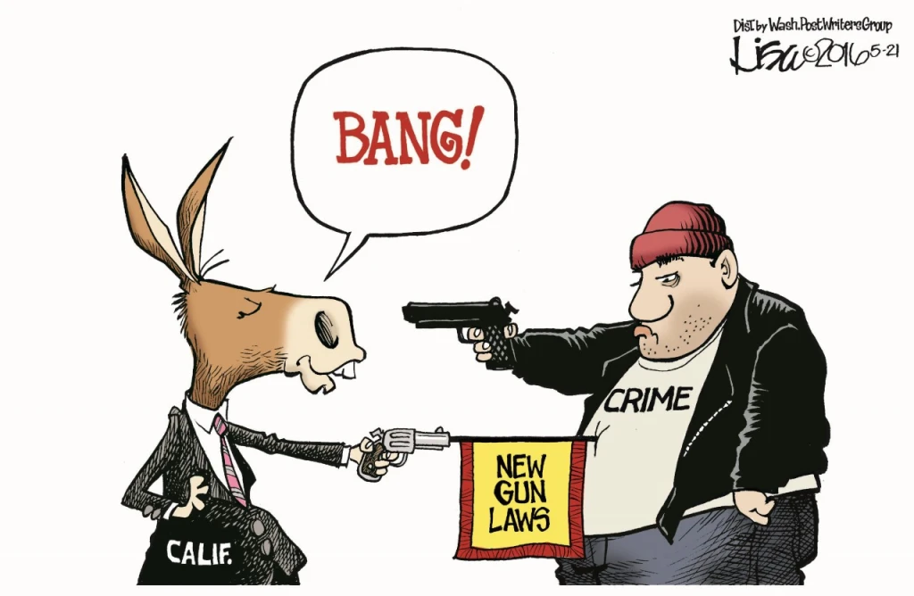
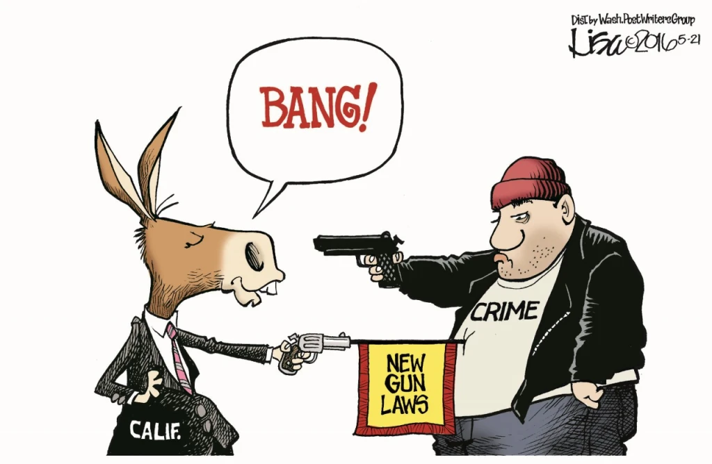

GUNS VIOLENCE CRIME SOCIETY LAWS CONGRESS FIREARMS CONFLICT VICTIMS
Current page: HOME
Gun Control... A Violation of Our Second Ammendment Rights or The Only Way to Protect Us?

The Supporters
If you combine the populations of Great Britain, France, Germany, Japan, Switzerland, Sweden, Denmark and Australia, you'll get a population roughly the size of the United States. We had 30,000 gun deaths last year, they had 112. The difference between them and us is not that Americans are more violent by nature. It is because they have strict gun control laws.
"American children under age 15 were nine times more likely to die of a gun accident than children in other advanced wealthy countries"
by David Frum, CNN and Daily Beast contributor
"Why is gun possession a greater problem in the United States than in other developed countries?"
by Ronald W. Lindsey MD
According to a Mar. 10, 2016 Lancet study, implementing federal universal background checks could reduce firearm deaths by a projected 56.9%; background checks for ammunition purchases could reduce deaths by a projected 80.7%; and gun identification requirements could reduce deaths by a projected 82.5%. In 2010 there were 230 "justifiable homicides" in which a private citizen used a firearm to kill a felon, compared to 8,275 criminal gun homicides (or, 36 criminal homicides for every "justifiable homicide"). How is this possible? Maybe because as much as 40% of all gun sales are undocumented private party gun sales that do not require a background check.And even then, a large chunk of those gun sales that are documented aren for law-abiding citizens. Although they may be bought by regular citizens, around 232,400 guns end up in the wronds due to burglary, car theft, and in general as shown by a research study by Ian Ayres, JD, PhD and John J. Donohue, JD, PhD, Professors of Law at Yale Law School and Stanford Law School.But itś not just the physical aspect of guns that needs to be stopped. A research study by Pacific Institute for Research and Evaluation (PIRE), shows that in 2010 alone, there were 30,000 Emergency room visits and 30,000 separate hospitalizations for gun-related injuries costs 7 million dollars that were mostly paid off by Medicaid effectively causing the American people millions of dollars in taxes just from owning a gun.

The Opposing
There are people who have different views as well. Those who don't want gun rights to become a scarcity. If we ban guns, should we also ban alcohol? What good did the 18th amendments do? We CANNOT ban guns just because of the potential to kill. We can have higher requirements for buying guns but we cannot BAN guns
Besides the fact that they dispute the second amendment, gun rights laws may not work at all. When referring to the tighter restrictions on guns in Chicago, press secretary Sarah Sanders expands on this when she says "I think one of the things we don't want to do is try to create laws that won't stop these types of things from happening. Just because the laws are put in place, doesn't mean they'll have any effect on such a wide scale such as a whole country when it doesn't even work properly in a single city. You can take away something that's been ingrained in someoneś culture and not expect resistance.
To truly fix society's problems is our greatest challenge, using a type of firearm to blame ALL society's ills is not going to solve anything. If you are not promoting a broad fix to a social problem then you are promoting a narrow "headline" grabbing stance, then on to the next"headline"
An Opinion From The Community
The horrific murders in Parkland, Florida have left me feeling sad and angry… But already, like in so many cases before, the gun control lobby is shamelessly using the blood of innocents to advance their anti-gun agenda. While the entire country is mourning with our friends in Florida, politicians and media zealots are using this so called opportunity to grandstand for gun control...Before the victims were even accounted for, U.S. Senator Bill Nelson (D-FL) was already making calls for universal gun registration in a CNN interview. While the media and politicians are all too eager to regurgitate their gun control narrative, they are all leaving out one very important fact...The school was another gun-free zone!Once again, a few signs and wishful snowflake thinking failed to protect the innocent lives of our children from the dangers of the real world. Deranged mad-men like yesterday’s shooter never stop taking advantage of gun control...The reality is that confronting evil with force is essential to defending innocent life...Every law-abiding American deserves the right to defend themselves from attackers and nut-jobs like this...As Second Amendment activists, we MUST be vigilant in these times -- not just in the defense of our loved ones, but in defense of our right to keep and bear arms.
-Dudley Brown; President of National Association for Gun Rights
Consensus
Gun control decreases violence? Is that really true? Or is it just a hindrance to our rights and the second amendment? Although some may argue that the answer is one or the other, the truth is both arguments have justification for their beliefs. Allowing untrained people to carry guns puts others at risk and it can result in self-inflicting injuries both by suicide and unintentional incidents. But it is also a restriction on what was promised to the people of America when it was first created.

For example, back in August of 2018, a mass shooting left 12 people dead and 66 wounded in Chicago, Illinois leaving residents thinking that ¨There are too many guns on the street. Too many people with criminal records on the street. And there is a shortage of values of what is right and what is wrong. Although there have been additional officers deployed in hopes of catching the criminals, the perpetrators have not been caught … However, on their way to them, the police have been able to confiscate 46 people on firearm charges with 60 unlicensed guns. Trump has argued many time that one of his main focuses is to reduce street crime but the rates haven´t decreased at all. We've tried to coexist with guns, but it just doesn't work.
"Criminals will just go to whatever lengths necessary get their hands on guns.
"
by Danielle Kurtzleben, NPR reporter
Under every circumstance, every turn of the cheek, guns have been illegally acquired and used incorrectly. Although the majority of gun owners may be licensed,it only takes one person who gets their hands on a gun to mow down 30 people with ease.
 



 
